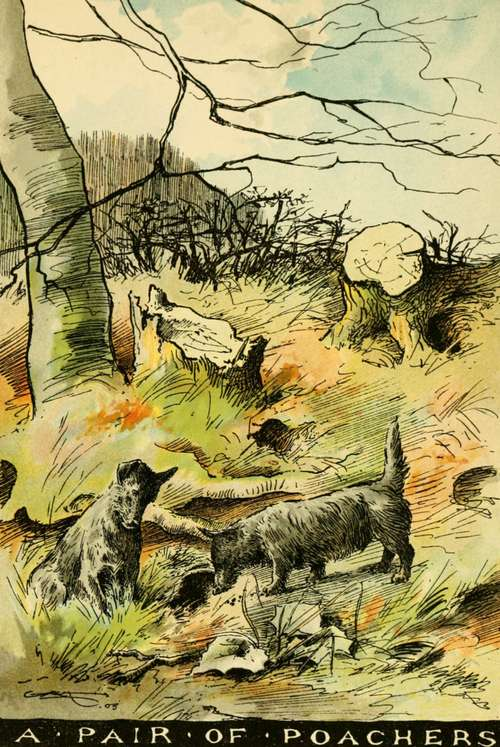

Chapter I. Dogs In Books And Real Life
Description
This section is from the book "Horses, Guns, And Dogs", by J. Otho Paget, George A. B. Dewar A. B. Portman, And A. Innes Shand. Also available from Amazon: Horses, guns and dogs.
Chapter I. Dogs In Books And Real Life
The dog is the boy's best companion. "Walks with my tutor" are all very well, but walks with my dog are what he really enjoys. The dog has perhaps the best of it, in point of intelligence, but the boy gradually picks up a great deal. The boy does not mind tearing his jacket, and often lands at home after a ramble in a condition that scandalises his parents and guardians ; but the dog has decidedly the pull of him in following out their common pursuits. He cares even less for his coat than the boy for his jacket. He can go grubbing among thorny hedge - roots, and crawling along damp ditches; he can even carry his researches into fox-earths and rabbit-burrows. Consequently he is always coming upon delightful surprises, startling rabbits from their seats and hares from their forms, and setting all the bird-folk of the hedge in commotion. The boy envies him the sharp yelp of fierce delight when he snaps vainly at the fud of a scuttling rabbit, and perhaps only misses by a mouthful of flick ; though, if he could, he would not care to worry the rat or the weasel, who has been the victim of a sudden spring. On the other hand, he has interests the dog cannot share. The thorns shake : there is the scream of the startled blackbird, and there is the nest with the young newly feathered, and on the point of taking flight. Or when the wood-pigeon makes a dash from the farther side of the fir, up goes the boy, hand over hand, and it is the turn of the dog to look on in disgust.
I have been talking of " the open-air boy," and I cannot help pitying boys who have their homes in a city. It is hardly fair on a dog to keep him in town ; it is like caging a lark, accustomed to soar, and tantalising him with a miserable scrap of turf. A terrier in London, looking at the world through area railings, chasing cats who always escape him in the back yard, naturally overeats himself, gets out of condition, and becomes misanthropic. By nature, though he is death on vermin, he is the most amiable of animals ; but in town he snaps savagely at the milkman's legs, or makes a snatch at the seat of the trousers of the butcher's boy. The worst is that his master has to bear the blame, and is for ever getting into hot water. Perhaps the business is settled by the dog being stolen, if he is worth his salt. For dog-stealing is a very lucrative trade, and professional villains are up to all manner of dodges and devices. They carry strong-smelling delicacies about with them that no dog can resist; they watch for their opportunity at the corner of a lane, and, when you look over your shoulder, your favourite is gone. He is growling at the bottom of a sack, or in the depths of a big pocket, with a strong hand pressed upon his muzzle. Of course one is sorry for the boy, but far more grieved for the dog. Did you ever read "Tickler among the Thieves," by Dr. John Brown, author of " Rab and his Friends." If not, the sooner you get the book the better, for Dr. Brown knew more about dogs than most men. I don't mean about their breeds or their ailments, but about the inner nature, which it should be your pleasure to draw out. Tickler had been petted and pampered, and the change to the den of the thief, who punched his head and kept him on coarse commons, nearly broke the heart of the poor little fellow. That the story had a happy ending, that Tickler was restored to the bosom of his family, has nothing to do with my moral, for Tickler had a very unusual piece of luck. It was more likely that, like Uncle Tom of " Uncle Tom's Cabin"—another book you ought to read—he would have been sold into slavery, and changed a kind for a careless or brutal master. And you may be sure that dogs have longer memories than you fancy. You have probably read the Odyssey with cribs, for I take it that you are not much at home in the Greek. Then you remember how Ulysses' dog recognised him at once, when he had been cruising for many years among the Greek islands on his way back from Troy. I suspect Horace was drawing the long-bow, or, to speak more correctly, indulging in poetic license, when he makes the dog recognise his old master at the first sniff. Much more natural is Sir Walter Scott's scene in "Old Mortality," when Henry Morton comes back from the Dutch wars to his home on the Clyde. The old spaniel he left behind, barks at the stranger, then smells round him, and finally jumps up and fawns. "The creature kens you," exclaims the old housekeeper. That gradual recognition is true to the life ; but Scott knew more about dogs than Homer, and at least as much as Dr. Brown.
By the way, if any one is fool enough to laugh at you for making a friend of your dog and loving him, refer him to Sir Walter, and read Lockhart's " Life." The most delightful writer since Shakespeare, he still amuses hundreds of thousands of people. He made an immense fortune, though he was unlucky enough to lose it. He was honoured by the most learned and the noblest in the land. But next to his children, he delighted in his dogs, and however hard he might be writing, his doors were never closed to one or the other. In the country, whether at Ashestiel or Abbotsford, his window was always open, so that they might go freely out and in. When his famous deerhound Maida lived, Maida always mounted guard in his study ; when Maida was off duty, he was relieved by Hintee, a solemn cat. As great a favourite was the bulldog Camp ; and when Camp died in Edinburgh of old age and infirmities, Scott buried him with his own hands in the back garden, and declined an invitation to dinner on account of the loss of a dear old friend. He had dogs of all sorts, and when he went out for a ride or a walk, he was always attended by a canine tail—a " tail " was the retinue of the old Highland chief. There were deerhounds for show and beauty and sagacity ; there were greyhounds for coursing, of which he was very fond; there were setters and pointers for his guests to shoot over ; and there was always a tagrag-and-bobtail of terriers, which I believe amused him the most. He tells how the stately old Maida was tempted into frolics with the youngsters, but when he caught his master's eye, fell back upon his dignity, seeming to say, " Ha' done now ; cease your fooling." He studied those dogs as he studied human nature. He mentions one " shamefaced little terrier " who would sneak away and hide himself at the slightest reproof, and could only be drawn out of his retreat by the sound of a meat-chopper when the dinner hour was past and hunger had got the better of him. And he passed a broken night of great anxiety when another little fellow had dropped behind a riding party and gone astray on the moors. When I get on Scott and his dogs I have mounted a hobby, and I could go on scribbling for ever. They crop up in all his novels and poems, and the scenes and the characters are all taken from the life. Lufra, of "The Lady of the Lake," is one of his fleetest greyhounds ; Maida is the Bevis of Sir Henry Lee in "Woodstock," and he thrusts his muzzle, in " Ivanhoe," into the hand of Cedric the Saxon in his hall of Rotherwood. Wasp, who followed the fortunes of Bertram in " Guy Mannering," we know well; and Mustards and Peppers were as plentiful about the doors of Abbotsford as at Dandie Dinmont's homestead at Charlieshope. Then the comical situations are as true to realities as any of the Scotch pictures of Sir David Wilkie; and if you have not laughed at "The Blind Fiddler," or "The Penny Wedding," the sooner you do so the better. But my hobby is bolting with me again, and I must pull up.

Continue to: